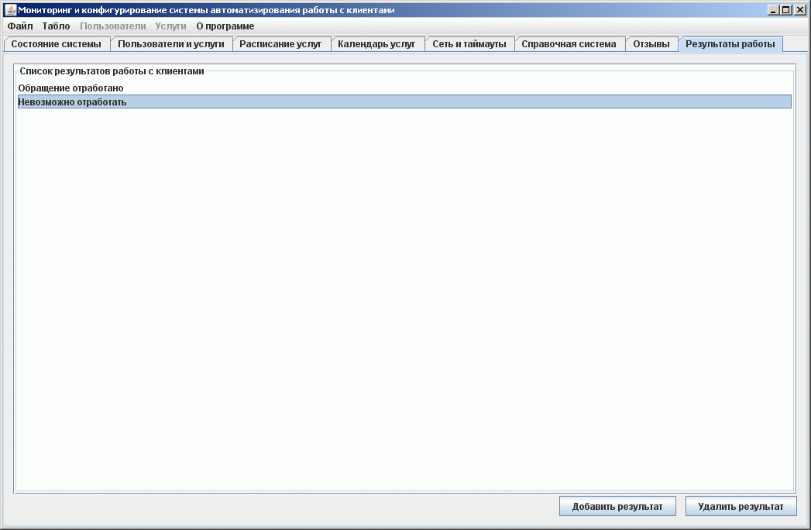

Ведение справочника возможных результатов работы пользователя с коиентами
На этой закладке формируется справочник возможных результатов работы пользователя с коиентами организации, которые можно выбирать пользователю при завершении обслуживания клиента. Для этого услуга, по которой обращается клиент должна иметь в настройках указание запрашивать результат работы с клиентом.

Здесь расположен список возможных результатов работы пользователя с коиентами. Можно добавлять новые или удалять старые результаты. Размер справочника не ограничен.
Список пользователю для выбора результата будет предложен послетого как он закончит работу с клиентом и нажмет кнопку "Закончить работу" в пульте оператора.